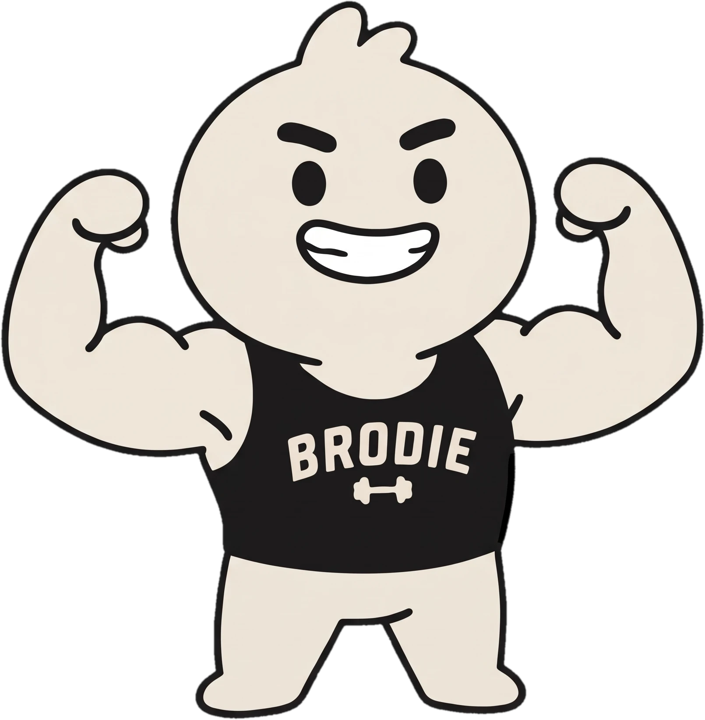
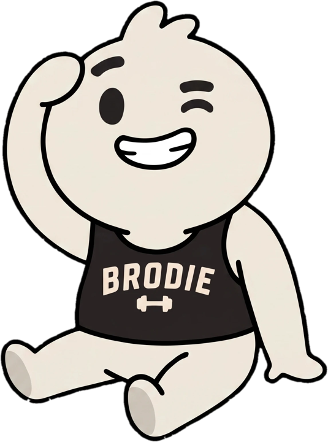
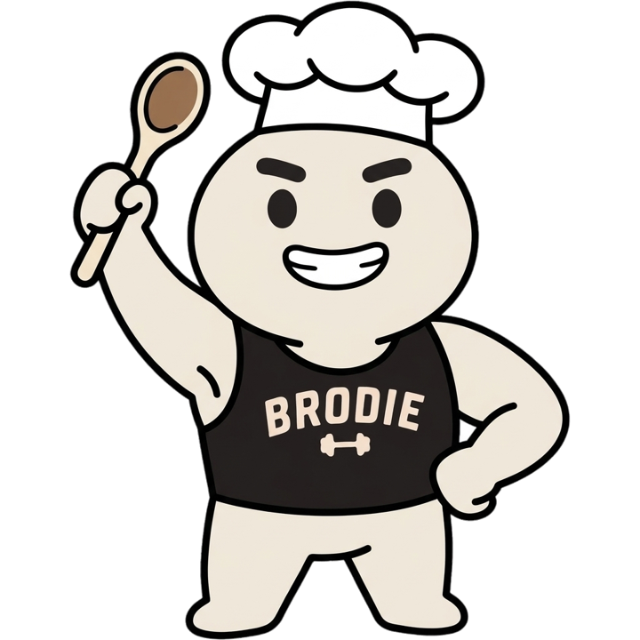
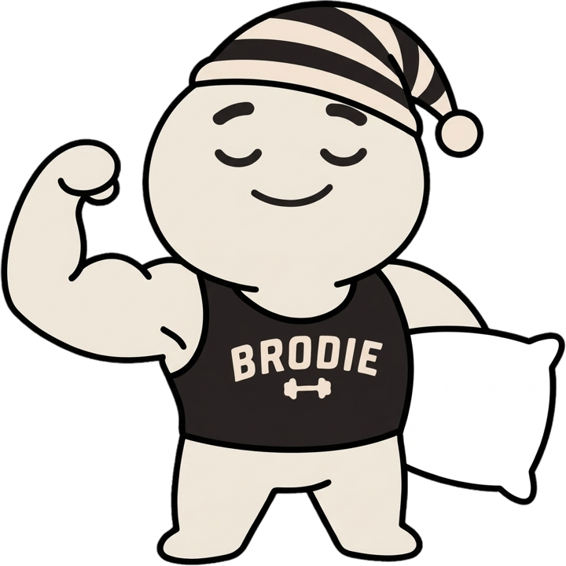
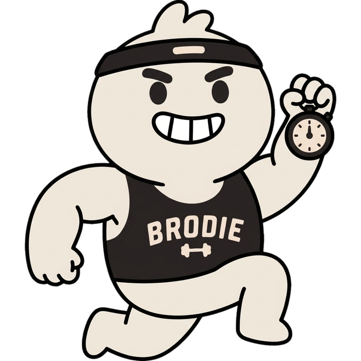
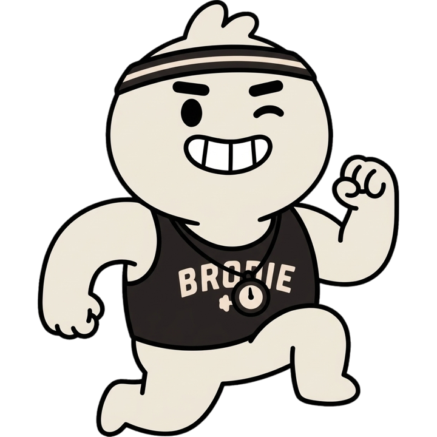

<title>Brodie Character Kit</title>
<link rel="preconnect" href="https://fonts.googleapis.com">
<link rel="preconnect" href="https://fonts.gstatic.com" crossorigin>
<link rel="stylesheet" href="https://fonts.googleapis.com/css2?family=Outfit:wght@500;700;800;900&family=Instrument+Sans:wght@400;500;600&family=IBM+Plex+Mono:wght@400;500&display=swap">
<style>
/* Layout: a sticker sheet. Brodie die-cut stickers on the app's ink ground; each section is one rule of the character, shown before it is explained. Single dark look, matching the app and the tee. */
:root {
  --ink: #1A1919;          /* garment, tank, outline */
  --ink-2: #242222;        /* raised surface */
  --line: #353231;
  --cream: #EFE7DA;        /* Brodie's body. canon. */
  --tan: #C2A882;          /* accent: speed marks, rules */
  --pink: #F1E4D8;         /* the drift we reject */
  --fg: #EFE7DA;
  --muted: #A29C93;
  --bad: #E0705F;
  --good: #9FC27A;
  --display: "Outfit", "Arial Rounded MT Bold", system-ui, sans-serif;
  --body: "Instrument Sans", system-ui, -apple-system, sans-serif;
  --mono: "IBM Plex Mono", ui-monospace, Menlo, monospace;
  color-scheme: dark;
}
* { box-sizing: border-box; }
img { height: auto; }
body { background: var(--ink); color: var(--fg); font-family: var(--body); font-size: 16px; line-height: 1.55; -webkit-font-smoothing: antialiased; }
.wrap { max-width: 1080px; margin: 0 auto; padding-inline: 20px; padding-block: 40px 80px; display: flex; flex-direction: column; gap: 72px; }
h1, h2, h3 { font-family: var(--display); margin: 0; text-wrap: balance; letter-spacing: -0.02em; }
h2 { font-size: clamp(26px, 3.6vw, 36px); font-weight: 800; }
h3 { font-size: 19px; font-weight: 700; }
p { margin: 0; max-width: 64ch; }
.eyebrow { font-family: var(--mono); font-size: 12px; letter-spacing: 0.1em; text-transform: uppercase; color: var(--tan); }
.muted { color: var(--muted); }
code, .mono { font-family: var(--mono); font-size: 0.88em; }
code { background: var(--ink-2); border: 1px solid var(--line); border-radius: 5px; padding: 1px 6px; }
section { display: flex; flex-direction: column; gap: 22px; }
.sec-head { display: flex; flex-direction: column; gap: 8px; }

/* die-cut sticker: a white rim drawn by stacked drop-shadows */
.sticker { filter: drop-shadow(3px 0 0 #fff) drop-shadow(-3px 0 0 #fff) drop-shadow(0 3px 0 #fff) drop-shadow(0 -3px 0 #fff) drop-shadow(0 14px 18px rgba(0,0,0,.45)); }

/* hero */
.hero { display: grid; grid-template-columns: 1.1fr 1fr; gap: 32px; align-items: center; }
.hero h1 { font-size: clamp(54px, 9vw, 108px); font-weight: 900; line-height: 0.88; letter-spacing: -0.045em; }
.hero h1 span { display: block; color: var(--tan); font-weight: 700; font-size: 0.42em; letter-spacing: -0.02em; margin-top: 10px; }
.hero-copy { display: flex; flex-direction: column; gap: 20px; min-width: 0; }
.hero-copy p { font-size: 18px; color: var(--muted); }
.hero-copy p b { color: var(--fg); font-weight: 600; }
.hero-art { position: relative; display: flex; justify-content: center; }
.hero-art img { width: min(100%, 440px); transform: rotate(-3deg); }
.hero-art .marks { position: absolute; inset: 0; pointer-events: none; }
@media (prefers-reduced-motion: no-preference) {
  .hero-art img { animation: pop .7s cubic-bezier(.2,1.4,.4,1) both; }
  @keyframes pop { from { transform: rotate(-3deg) scale(.92); } to { transform: rotate(-3deg) scale(1); } }
}

/* colour */
.swatches { display: grid; grid-template-columns: repeat(auto-fit, minmax(min(100%, 230px), 1fr)); gap: 14px; }
.sw { border: 1px solid var(--line); border-radius: 14px; overflow: hidden; background: var(--ink-2); display: flex; flex-direction: column; }
.sw .chip { height: 118px; display: flex; align-items: flex-end; padding: 12px; }
.sw .meta { padding: 14px; display: flex; flex-direction: column; gap: 4px; }
.sw .hex { font-family: var(--mono); font-size: 15px; font-weight: 500; }
.sw .name { font-family: var(--display); font-weight: 700; font-size: 17px; }
.sw .use { font-size: 14px; color: var(--muted); }
.sw .lab { font-family: var(--mono); font-size: 12px; color: var(--muted); }

.versus { display: grid; grid-template-columns: 1fr 1fr; gap: 0; border-radius: 16px; overflow: hidden; border: 1px solid var(--line); }
.versus > div { padding: 22px; display: flex; flex-direction: column; gap: 10px; min-width: 0; }
.versus .v-cream { background: var(--cream); color: var(--ink); }
.versus .v-pink { background: var(--pink); color: var(--ink); }
.versus .tag { font-family: var(--mono); font-size: 12px; letter-spacing: .08em; text-transform: uppercase; }
.versus .big { font-family: var(--display); font-weight: 800; font-size: 26px; letter-spacing: -0.02em; }
.versus p { font-size: 14.5px; }

/* anatomy */
.anatomy { display: grid; grid-template-columns: 1fr 1fr; gap: 28px; align-items: start; }
.poses { display: grid; grid-template-columns: 1fr 1fr; gap: 18px; align-items: end; }
.poses figure { margin: 0; display: flex; flex-direction: column; gap: 10px; align-items: center; }
.poses img { width: 100%; }
figcaption { font-family: var(--mono); font-size: 12px; color: var(--muted); text-align: center; }
.traits { list-style: none; margin: 0; padding: 0; display: flex; flex-direction: column; border-top: 1px solid var(--line); min-width: 0; }
.traits li { display: grid; grid-template-columns: 112px 1fr; gap: 14px; padding: 12px 0; border-bottom: 1px solid var(--line); font-size: 15px; }
.traits b { font-family: var(--display); font-weight: 700; color: var(--tan); font-size: 15px; }

/* rules */
.rules { display: grid; grid-template-columns: 1fr 1fr; gap: 14px; }
.rule { background: var(--ink-2); border: 1px solid var(--line); border-radius: 14px; padding: 20px; display: flex; flex-direction: column; gap: 12px; }
.rule ul { margin: 0; padding-left: 18px; display: flex; flex-direction: column; gap: 7px; font-size: 15px; color: var(--muted); }
.rule ul b { color: var(--fg); font-weight: 600; }
.rule.lock h3::before { content: "Locked"; }
.rule.free h3::before { content: "Yours to change"; }
.rule h3::before { display: block; font-family: var(--mono); font-size: 11px; letter-spacing: .1em; text-transform: uppercase; font-weight: 500; margin-bottom: 4px; }
.rule.lock h3::before { color: var(--bad); }
.rule.free h3::before { color: var(--good); }

/* prompt */
.prompt { background: #111010; border: 1px solid var(--line); border-radius: 14px; overflow: hidden; }
.prompt-bar { display: flex; justify-content: space-between; align-items: center; gap: 12px; padding: 10px 14px; border-bottom: 1px solid var(--line); flex-wrap: wrap; }
.prompt-bar span { font-family: var(--mono); font-size: 12px; color: var(--muted); }
.prompt pre { margin: 0; padding: 18px; font-family: var(--mono); font-size: 13.5px; line-height: 1.6; white-space: pre-wrap; word-break: break-word; color: var(--fg); max-height: 420px; overflow: auto; }
.prompt pre .slot { color: var(--ink); background: var(--tan); border-radius: 4px; padding: 0 4px; }
button.copy { font: 600 13px var(--body); background: var(--cream); color: var(--ink); border: 0; border-radius: 999px; padding: 7px 14px; cursor: pointer; }
button.copy:hover { background: #fff; }
button.copy:focus-visible { outline: 2px solid var(--tan); outline-offset: 2px; }
.steps { margin: 0; padding-left: 22px; display: flex; flex-direction: column; gap: 8px; max-width: 72ch; }

/* gallery */
.gallery { display: grid; grid-template-columns: repeat(3, 1fr); gap: 18px; }
.card { background: var(--ink-2); border: 1px solid var(--line); border-radius: 18px; padding: 22px 18px 18px; display: flex; flex-direction: column; gap: 14px; min-width: 0; }
.card .art { aspect-ratio: 1; display: flex; align-items: center; justify-content: center; max-width: 100%; }
.card .art img { max-height: 100%; width: auto; max-width: 100%; }
.card .skill { font-family: var(--mono); font-size: 12px; letter-spacing: .08em; text-transform: uppercase; color: var(--tan); }
.card .costume { font-size: 14.5px; color: var(--muted); }
.qa { display: inline-flex; align-items: center; gap: 6px; font-family: var(--mono); font-size: 12px; padding: 3px 9px; border-radius: 999px; border: 1px solid; align-self: flex-start; }
.qa.pass { color: var(--good); border-color: color-mix(in srgb, var(--good) 50%, transparent); }
.qa.fail { color: var(--bad); border-color: color-mix(in srgb, var(--bad) 50%, transparent); }

.ideas { display: flex; flex-wrap: wrap; gap: 8px; }
.ideas span { border: 1px solid var(--line); border-radius: 999px; padding: 6px 12px; font-size: 14px; color: var(--muted); }
.ideas span b { color: var(--fg); font-weight: 600; }

.donts { display: grid; grid-template-columns: 1fr 1fr; gap: 18px; }
.dont { border: 1px solid color-mix(in srgb, var(--bad) 40%, var(--line)); border-radius: 18px; padding: 20px; display: grid; grid-template-columns: 150px 1fr; gap: 18px; align-items: center; background: var(--ink-2); }
.dont img { width: 100%; }
.dont div { display: flex; flex-direction: column; gap: 8px; min-width: 0; }

/* QA */
.cli { background: #111010; border: 1px solid var(--line); border-radius: 12px; padding: 16px 18px; font-family: var(--mono); font-size: 13px; line-height: 1.7; overflow-x: auto; white-space: pre; color: var(--fg); }
.cli .c { color: var(--muted); }
.cli .p { color: var(--good); } .cli .f { color: var(--bad); }
.limits { overflow-x: auto; }
table { border-collapse: collapse; width: 100%; font-size: 14.5px; min-width: 520px; }
th { text-align: left; font-family: var(--mono); font-size: 11px; letter-spacing: .08em; text-transform: uppercase; color: var(--muted); font-weight: 500; padding: 8px 10px; border-bottom: 1px solid var(--line); }
td { padding: 10px; border-bottom: 1px solid var(--line); vertical-align: top; }
td.num { font-family: var(--mono); font-variant-numeric: tabular-nums; white-space: nowrap; }

/* get the kit */
.get { display: grid; grid-template-columns: repeat(auto-fit, minmax(min(100%, 300px), 1fr)); gap: 14px; }
.get-card { background: var(--ink-2); border: 1px solid var(--line); border-radius: 14px; padding: 20px; display: flex; flex-direction: column; gap: 12px; min-width: 0; }
.get-card ul { list-style: none; margin: 0; padding: 0; display: flex; flex-direction: column; gap: 8px; }
a { color: var(--cream); text-decoration-color: var(--tan); text-underline-offset: 3px; }
a:hover { color: #fff; }
a:focus-visible { outline: 2px solid var(--tan); outline-offset: 2px; border-radius: 3px; }
.btn { display: inline-flex; align-self: flex-start; font: 600 14px var(--body); background: var(--cream); color: var(--ink); text-decoration: none; border-radius: 999px; padding: 9px 16px; }
.btn:hover { background: #fff; color: var(--ink); }
.agent-cmd { background: #111010; border: 1px solid var(--line); border-radius: 10px; padding: 12px 14px; font-family: var(--mono); font-size: 12.5px; line-height: 1.6; overflow-x: auto; white-space: pre; }
footer { color: var(--muted); font-size: 14px; border-top: 1px solid var(--line); padding-top: 20px; }

@media (max-width: 820px) {
  .hero, .anatomy, .rules, .donts { grid-template-columns: 1fr; }
  .gallery { grid-template-columns: 1fr 1fr; }
  .hero-art { order: -1; }
}
@media (max-width: 520px) {
  .gallery { grid-template-columns: 1fr; }
  .versus { grid-template-columns: 1fr; }
  .dont { grid-template-columns: 110px 1fr; padding: 14px; }
  .traits li { grid-template-columns: 1fr; gap: 2px; }
  .hero-art img { width: 78%; }
}
</style>

<main class="wrap">

  <header class="hero">
    <div class="hero-copy">
      <span class="eyebrow">Character kit · flat sticker style · v1</span>
      <h1>brodie<span>dress him up for any skill.</span></h1>
      <p>Everything you need to put Brodie in a chef's hat, a sweatband or a nightcap and still have him look like <b>Brodie</b>: the canon colours, the parts of him that never change, a copy-paste image prompt, and a check that catches him turning pink.</p>
      <p class="muted" style="font-size:15px">Built from the new carousel art. Both references below are colour-corrected to canon cream.</p>
    </div>
    <div class="hero-art">
      
    </div>
  </header>


  <section aria-labelledby="get-h">
    <div class="sec-head">
      <span class="eyebrow">Get the kit</span>
      <h2 id="get-h">For builders and their agents</h2>
    </div>
    <div class="get">
      <div class="get-card">
        <h3>Builders</h3>
        <a class="btn" href="https://github.com/seraphimlabs-dev/brodie-character-kit/archive/refs/heads/main.zip">Download the kit (.zip)</a>
        <ul>
          <li><a href="https://raw.githubusercontent.com/seraphimlabs-dev/brodie-character-kit/main/reference/brodie-flex.png">reference/brodie-flex.png</a></li>
          <li><a href="https://raw.githubusercontent.com/seraphimlabs-dev/brodie-character-kit/main/reference/brodie-sit-wave.png">reference/brodie-sit-wave.png</a></li>
          <li><a href="https://raw.githubusercontent.com/seraphimlabs-dev/brodie-character-kit/main/pfp/brodie-pfp.png">pfp/brodie-pfp.png</a> · <a href="https://raw.githubusercontent.com/seraphimlabs-dev/brodie-character-kit/main/pfp/brodie-pfp-square.png">square</a></li>
          <li><a href="https://github.com/seraphimlabs-dev/brodie-character-kit">Source on GitHub</a></li>
        </ul>
      </div>
      <div class="get-card">
        <h3>Agents</h3>
        <p class="muted" style="font-size:15px">Point your agent at the spec and the instructions. <code>brodie.json</code> holds the colours, locked traits, prompt and QA thresholds; <code>AGENTS.md</code> is the step-by-step.</p>
        <ul>
          <li><a href="https://raw.githubusercontent.com/seraphimlabs-dev/brodie-character-kit/main/brodie.json">brodie.json</a></li>
          <li><a href="https://raw.githubusercontent.com/seraphimlabs-dev/brodie-character-kit/main/AGENTS.md">AGENTS.md</a></li>
          <li><a href="https://raw.githubusercontent.com/seraphimlabs-dev/brodie-character-kit/main/llms.txt">llms.txt</a></li>
          <li><a href="https://github.com/seraphimlabs-dev/brodie-character-kit/blob/main/skill/brodie-character/SKILL.md">Claude skill: brodie-character</a></li>
        </ul>
<div class="agent-cmd">Draw Brodie as a [skill] coach. Follow
https://raw.githubusercontent.com/seraphimlabs-dev/brodie-character-kit/main/AGENTS.md exactly.</div>
      </div>
    </div>
  </section>

  <section aria-labelledby="color-h">
    <div class="sec-head">
      <span class="eyebrow">01 · Colour</span>
      <h2 id="color-h">He is bone cream. Never pink.</h2>
      <p class="muted">Image models pull Brodie toward skin tones. Every generation gets measured against <code>#EFE7DA</code> before it ships.</p>
    </div>
    <div class="swatches">
      <div class="sw"><div class="chip" style="background:var(--cream)"></div><div class="meta"><span class="name">Brodie cream</span><span class="hex">#EFE7DA</span><span class="use">Head, tuft, arms, legs, tank lettering, dumbbell.</span><span class="lab">L 91.9 · a* +0.5 · b* +7.3</span></div></div>
      <div class="sw"><div class="chip" style="background:var(--ink);border-bottom:1px solid var(--line)"></div><div class="meta"><span class="name">Ink</span><span class="hex">#1A1919</span><span class="use">Outline, brows, eyes, tank top.</span><span class="lab">near-black, warm</span></div></div>
      <div class="sw"><div class="chip" style="background:#FFFFFF"></div><div class="meta"><span class="name">Teeth white</span><span class="hex">#FFFFFF</span><span class="use">The grin. Also white props: chef hat, pillow, towel.</span><span class="lab">only inside an outline</span></div></div>
      <div class="sw"><div class="chip" style="background:var(--tan)"></div><div class="meta"><span class="name">Tan accent</span><span class="hex">#C2A882</span><span class="use">Speed marks, ground bars, wooden props. Never on his body.</span><span class="lab">from the tee print</span></div></div>
    </div>
    <div class="versus">
      <div class="v-cream"><span class="tag">Canon</span><span class="big">#EFE7DA</span><p>Bone. Reads warm against black, neutral against white. Red and green sit in balance (a* +0.5).</p></div>
      <div class="v-pink"><span class="tag">Rejected drift</span><span class="big">#F1E4D8</span><p>What the original flex art shipped with. Red runs ahead of green (a* +2.8) and he starts to look like skin. Side by side the difference is obvious; alone it slips through.</p></div>
    </div>
  </section>

  <section aria-labelledby="anat-h">
    <div class="sec-head">
      <span class="eyebrow">02 · Anatomy</span>
      <h2 id="anat-h">The parts that make him Brodie</h2>
    </div>
    <div class="anatomy">
      <div class="poses">
        <figure><figcaption>reference/brodie-flex.png</figcaption></figure>
        <figure><figcaption>reference/brodie-sit-wave.png</figcaption></figure>
      </div>
      <ul class="traits">
        <li><b>Head</b><span>Oversized and round, about 45% of his height. Three-lobe tuft of hair on top, same cream.</span></li>
        <li><b>Face</b><span>Thick black bar brows. Solid black oval eyes, or one closed wink arc. No nose, no ears, no cheeks, no blush.</span></li>
        <li><b>Mouth</b><span>One mouth. Either a big open grin with white teeth outlined in black, or one small closed smile.</span></li>
        <li><b>Body</b><span>Big muscular arms with round fists. Short stubby legs, no feet detail, no shoes.</span></li>
        <li><b>Tank</b><span>Black tank, arched cream collegiate <span class="mono">BRODIE</span>, small cream dumbbell below. Always visible.</span></li>
        <li><b>Line</b><span>Thick, even, near-black outline on every shape. Flat fills, no gradients, no 3D, no texture.</span></li>
      </ul>
    </div>
  </section>

  <section aria-labelledby="rules-h">
    <div class="sec-head">
      <span class="eyebrow">03 · Costumes</span>
      <h2 id="rules-h">Add to him. Don't replace him.</h2>
      <p class="muted">A skill gets one costume idea, worn over the canon character. If someone can't tell it's Brodie with the costume blacked out, the costume is doing too much.</p>
    </div>
    <div class="rules">
      <div class="rule lock"><h3>Never changes</h3><ul>
        <li><b>Body colour</b> #EFE7DA, including the tuft.</li>
        <li><b>The tank</b> and its readable BRODIE lettering. Props and aprons sit beside it, not over it.</li>
        <li><b>The face kit</b>: bar brows, dot eyes, one mouth, no nose.</li>
        <li><b>Proportions</b>: big head, big arms, short legs.</li>
        <li><b>The style</b>: flat fills, thick outline, no rendering.</li>
      </ul></div>
      <div class="rule free"><h3>Costume slots</h3><ul>
        <li><b>Head</b>: one hat or band. The tuft can peek out or hide under it.</li>
        <li><b>Hands</b>: one prop per hand (spoon, stopwatch, foam roller, shaker).</li>
        <li><b>Expression</b>: grin, smirk, wink, sleepy, focused.</li>
        <li><b>Pose</b>: flex, sit, salute, jog, point, hands on hips.</li>
        <li><b>Prop colours</b>: ink, cream, white, tan, plus natural colour on small props (wood, food).</li>
      </ul></div>
    </div>
  </section>

  <section aria-labelledby="prompt-h">
    <div class="sec-head">
      <span class="eyebrow">04 · Generate</span>
      <h2 id="prompt-h">The prompt</h2>
      <p class="muted">Works with Gemini image, GPT image and anything else that takes reference images.</p>
    </div>
    <ol class="steps">
      <li>Attach <b>both</b> reference PNGs (<code>reference/brodie-flex.png</code> and <code>reference/brodie-sit-wave.png</code>). Never the 3D renders or the old pink art.</li>
      <li>Replace the highlighted line with your skill's costume and pose. Keep everything after it word for word.</li>
      <li>Run the result through <code>check_cream.py</code> before you post it.</li>
    </ol>
    <div class="prompt">
      <div class="prompt-bar"><span>prompt · costume line first, canon block after</span><button class="copy" id="copy-prompt" type="button">Copy prompt</button></div>
      <pre id="prompt-text"><span class="slot">Brodie as a [SKILL] coach: wearing [ONE HAT OR BAND], holding [PROP] in his [right/left] fist, [EXPRESSION], [POSE].</span> Same character as the reference images: Brodie, a chibi gym-buddy mascot. STYLE: flat 2D sticker illustration. One flat fill per shape, no gradients, no 3D, no texture. Thick, even, near-black outline (#1A1919) around every shape, with a few short interior contour strokes for muscles, the same weight as the references. BODY COLOUR (strict): bone/off-white cream, exactly hex #EFE7DA, the same cream as the references. NOT pink, NOT peach, NOT skin-tone, NOT salmon, NOT pure white, NOT yellow. No blush, no rosy cheeks, no pink tint anywhere on the body. ANATOMY: oversized round head (about 45% of his height) with a three-lobe tuft of hair on top in the same cream; thick black bar eyebrows; solid black oval eyes (one may be a closed wink arc); NO nose, NO ears, NO cheeks; one big open grin with white teeth outlined in black, or one small closed smile; muscular arms with round fists; short stubby legs, no feet detail, no shoes. OUTFIT: black tank top (#1A1919) with arched cream collegiate BRODIE lettering and a small cream dumbbell icon below it. The BRODIE lettering stays visible and readable. Costume pieces go ON TOP of the tank (hats, headbands, aprons that leave the lettering showing, props in hand); never replace the tank. COMPOSITION: one Brodie, full body, centred, generous margin, transparent-looking plain white background (#FFFFFF), no ground shadow, no scenery, no text other than BRODIE on the tank, no watermark.</pre>
    </div>
  </section>

  <section aria-labelledby="gal-h">
    <div class="sec-head">
      <span class="eyebrow">05 · Examples</span>
      <h2 id="gal-h">Three skills, one Brodie</h2>
      <p class="muted">Generated with the prompt above and the kit's own <code>gen_brodie.py</code>. Each passed the cream check on the first try.</p>
    </div>
    <div class="gallery">
      <article class="card"><div class="art"></div><span class="skill">Macros &amp; cooking</span><h3>Chef Brodie</h3><p class="costume">Tall white chef's hat, wooden spoon raised like a trophy, fist on hip.</p><span class="qa pass">✓ cream · a* +0.5</span></article>
      <article class="card"><div class="art"></div><span class="skill">Sleep &amp; recovery</span><h3>Sleepy Brodie</h3><p class="costume">Ink-and-cream striped nightcap, pillow under one arm, eyes closed.</p><span class="qa pass">✓ cream · a* +0.5</span></article>
      <article class="card"><div class="art"></div><span class="skill">Running &amp; cardio</span><h3>Cardio Brodie</h3><p class="costume">Black sweatband with the tuft poking out, stopwatch in his raised fist, mid-jog.</p><span class="qa pass">✓ cream · a* +0.5</span></article>
    </div>
    <div class="ideas" aria-label="More costume ideas">
      <span><b>Mobility</b> · rolled yoga mat under one arm</span>
      <span><b>Hydration</b> · giant water jug</span>
      <span><b>Supplements</b> · shaker bottle</span>
      <span><b>Physio</b> · foam roller</span>
      <span><b>Habit streaks</b> · flame-shaped trophy</span>
      <span><b>Swimming</b> · cap and goggles on forehead</span>
    </div>
  </section>

  <section aria-labelledby="dont-h">
    <div class="sec-head">
      <span class="eyebrow">06 · Rejects</span>
      <h2 id="dont-h">What gets sent back</h2>
    </div>
    <div class="donts">
      <div class="dont"><div><span class="qa fail">✗ too pink · a* +2.8</span><h3>Pink drift</h3><p class="muted" style="font-size:14.5px">The original flex art. Right shape, wrong colour. <code>fix_cream.py</code> snaps it back without touching outlines or teeth.</p></div></div>
      <div class="dont"><div><span class="qa fail">✗ lettering covered</span><h3>Prop over the tank</h3><p class="muted" style="font-size:14.5px">Colour passed, but the stopwatch hides "BRODIE". The colour check can't see this one; a person has to. Fixed by moving the prop into his fist.</p></div></div>
    </div>
  </section>

  <section aria-labelledby="qa-h">
    <div class="sec-head">
      <span class="eyebrow">07 · Enforce</span>
      <h2 id="qa-h">The cream check</h2>
      <p class="muted">Tools live in <code>tools/</code> in the <a href="https://github.com/seraphimlabs-dev/brodie-character-kit">GitHub repo</a>. Python 3 with numpy and Pillow, nothing else.</p>
    </div>
<div class="cli"><span class="c"># check any number of images; exits 1 if any fail</span>
python3 tools/check_cream.py examples/*.png
<span class="p">PASS</span> examples/macros-chef.png: fill #EFE7DA L91.9 a+0.5 b+7.3 dE 0.0
<span class="f">FAIL</span> examples/dont-pink-drift.png: fill #F1E4D8 L91.2 a+2.8 b+7.3 dE 2.3  &lt;- too pink

<span class="c"># snap a drifted image back to canon (keeps shading, outline, teeth, white props)</span>
python3 tools/fix_cream.py in.png out.png

<span class="c"># generate, check, auto-fix in one step (needs GEMINI_API_KEY)</span>
python3 tools/gen_brodie.py out.png "Brodie as a macros coach: tall white chef's hat, ..."

<span class="c"># knock out the white background, keep white teeth and hats</span>
python3 tools/cutout.py out.png out.png</div>
    <div class="limits">
      <table>
        <thead><tr><th>Measure (CIELAB, median body fill)</th><th>Allowed</th><th>Fails as</th></tr></thead>
        <tbody>
          <tr><td>a* (red vs green)</td><td class="num">−1.5 to +1.8</td><td>above: <b>too pink / peach</b>. below: grey-green</td></tr>
          <tr><td>b* (yellow vs blue)</td><td class="num">+5.0 to +11.0</td><td>below: too white. above: yellow or tan</td></tr>
          <tr><td>a*b* distance from #EFE7DA</td><td class="num">≤ 3.0</td><td>off canon</td></tr>
          <tr><td>Lightness</td><td class="num">not checked</td><td>left free so shaded or lit art still passes</td></tr>
        </tbody>
      </table>
    </div>
  </section>

  <footer>Source: <a href="https://github.com/seraphimlabs-dev/brodie-character-kit">github.com/seraphimlabs-dev/brodie-character-kit</a> · Brodie character kit v1 · source art: new carousel set (flex, sit-and-wave) · body #EFE7DA · ink #1A1919 · tan #C2A882</footer>
</main>

<script>
(function () {
  var btn = document.getElementById("copy-prompt");
  var pre = document.getElementById("prompt-text");
  btn.addEventListener("click", function () {
    var text = pre.textContent;
    function selectIt() {
      var r = document.createRange(); r.selectNodeContents(pre);
      var s = window.getSelection(); s.removeAllRanges(); s.addRange(r);
      btn.textContent = "Selected, press copy";
    }
    try {
      navigator.clipboard.writeText(text).then(function () {
        btn.textContent = "Copied";
        setTimeout(function () { btn.textContent = "Copy prompt"; }, 1800);
      }, selectIt);
    } catch (e) { selectIt(); }
  });
})();
</script>
